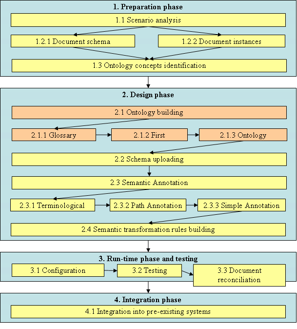
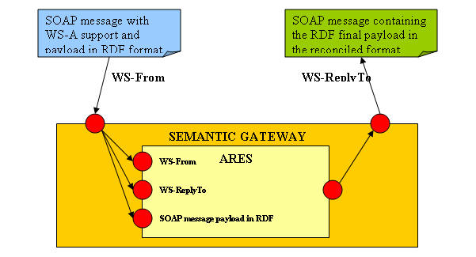

")

Semantics and ontologies - Application guidelines
Introduction
This section collects guidelines and procedures that can help users to deploy and use the A3 solutions for the semantic reconciliation in a real scenario. Three main phases are described below:
- Preparation phase: Analysis of the business scenario and preparation of the necessary material for the deployment.
- Design phase: After the creation of the reference Ontology, using the A3 tools each partner design its own environment, generating semantic annotations and semantic reconciliation rules.
- Run-time phase: The actual reconciliation of documents is performed and tested.
- Integration phase: The run-time reconciliation services provided by A3 are integrated into legacy systems.

Preparation phase
This phase should be performed, mainly, by functional analysts and domain experts in order to prepare the field to the specialist who will design and deploy the scenario.
Task 1.1: Scenario analysis
This phase should include a first analysis of the functional requirements which can help the technical analyst to figure out all the correct artefacts that should be deployed in the environment. Besides, the identification of all the details related to the business scenario and an agreement on a common understanding, at business level, shared by all the partners involved in the semantic integration allows a better identification of the main concepts for the development of the Reference Ontology.
Task 1.2: Document analysis
Task 1.2.1: Document schema identification
The first technical task is to collect the schemas of the documents that should be exchanged and reconciliated at runtime, in order to allow, in the design phase, the definition of the semantic annotation and rules on these schemas.
Task 1.2.2: Document instances identification
Since the actual reconciliation works on instances of the schema for which reconciliation rules have been previously defined, a set of such documents needs to be identified. These documents should be used also in the testing phase.
Task 1.3: Ontology concepts identification
After the identification of the basic artefacts that will be used in the design and test phase, it is possible to perform a deep analysis of the concepts found in those resources in order to get a better understanding of the overall scenario we are dealing with. This analysis can help the identification of all the concepts needed in the ontology and can help the analysts to understand if they need to build a new ontology or how they can use an existing one.
Design phase
All the tasks included in the design phase aim to design all the information needed for performing the runt-time phase.
Task 2.1: Ontology building
This task is accomplished using the Athos tool. Starting from the analysis performed before, the semantic specialists collect all the information and start to build the ontology, first with the definition of a glossary of common terms, then adding a first enrichment in order to get a taxonomy and at last finalizing the ontology including the relationships among concepts. Both, business analysts and semantic experts should cooperate during this phase in order to follow the functional aspects and maintain semantic consistency on the final ontology.
This task should not be always needed because after a scenario is covered, similar cases can use the same ontology.
Task 2.1.1: Glossary definition
This is the first step towards a stepwise construction of an ontology. At this stage, only the terminological level is addressed. Structuring of concepts, as well as relationships among them are not considered. The definition of a glossary requires first the identification of the relevant terms in the domain, gathered in a lexicon; then the latter is progressively enriched with definitions, yielding the glossary.
Task 2.1.2: First enrichment
A glossary is a powerful tool, since it establishes definitions of terms. But since such definitions are expressed in natural language, a glossary is more suitable for human being than automatic reasoning. For this reason, the second step in the construction of an ontology is the definition of taxonomies, usually specialization and decomposition. Taxonomies are a useful way of linking concepts, since they identify hierarchies among concepts.
Task 2.1.3: Ontology finalization
The real ontology needs the identification and establishment of other semantic relationships, such as attributes, relatedness, in order to build a complete semantic net as an ontology is.
Task 2.2: Schema uploading
The annotations and the semantic rules are strictly related and performed on RDF schemas of the business document that should be exchanged at run-time. For this reason both A* (for annotations) and Argos (for the reconciliation rules) share common RDF schemas using Themis. The Themis repository is also used as common reference for all the tools of the A3 framework and it provides functionalities for adding relations between document schemas and services used for exchanging message instances based on those schemas.
The analysts should upload RDF schemas of the business documents retrieved in the preparation phase. Often, in existing scenarios, the documents are defined as XML schemas which should be translated into RDFS using semi-automatic translators or following the rules of the RDFS syntax. The tool itself lets the users to upload only valid schemas in order to ensure quality check even during the design phase.
Task 2.3: Semantic Annotation
This task aims to enrich the knowledge on the business resources (in our case mainly RDF schemas of the business documents) allowing the creation of relations between the ontology concepts and the business elements. The Semantic Annotation is accomplished by the A* tool. The methodology behind the tool identifies 4 increasing levels of annotation: terminological, path, simple and full. At least the third level of annotation should be reached for reconciliation purposes. Like the task for the creation of the ontology, also this phase should involve both domain experts and semantic specialists, in order to bridge the gap between the business scenario and the semantic needs.
Task 2.3.1: Terminological annotation
It consists on a keyword-based annotation. Terms appearing in the schema that is being annotated are simply associated with a set of terms from the ontology.
Task 2.3.2: Path annotation
At this level, also the structure of the schemas and the ontology are taken into consideration. Complete paths, from the root element to the leaves, on the annotated schemas are associated with a set of paths from the ontology.
Task 2.3.3: Simple annotation
Using the simple annotation, it is possible to specify the type of mismatch that each annotation intends to cover. Such an information will be used also during the development of the semantic reconciliation rules (in the next task).
Task 2.4: Semantic transformation rules building
During the run-time phase the Ares reconciliation engine use semantic rules defined again document schemas to apply the reconciliation on the related document instances. These reconciliation rules are written by semantic specialists starting from the annotations made with A* and using the web interface provided by Argos. The advantage is that the users do not have to write rules for each direct transformation from a document schema to another but only from their own schemas to the ontology format. In particular, for each schema a set of rules needs to be built for incoming messages (Backward rules) and another set of rules for outgoing messages (Forward rules). In this context each partner has to care just about its own part and can easily plug its infrastructure into existing semantic-enabled environments.
Argos uses the syntax of the Jena library for specifying the rules in order to use the Jena reconciliation engine. Using that syntax the user can cover many kinds of transformations. The possibility to use also Java methods for applying specific actions gives an idea of the wide range of opportunities given to the users. Of course the usage of that syntax is not so user-friendly, so Argos provides a web interface to design the rules starting from a set of pre-existing rule templates which cover all the most common transformations:
- Map: to map a concept of the source model into a concept of the target model
- Map Table: to map the values of a concept having an enumeration type into the values of another enumerated concept in the target model
- Convert: to convert a concept of the source model to a concept of the target model by using a conversion parameter
- Sum: to sum 2 or more concepts of the source model to a concept of the target model
- Mult: to multiply 2 or more concepts of the source model to a concept of the target model
- Split: to split a concept of the source model to 2 or more concepts of the target model
- Merge: to merge 2 or more concepts of the source model into a concept of the target model
Run-time phase and testing
This include a first configuration phase, followed by the testing phase applied in order to check the consistency of rules provided in the design stage and at the end the reconciliation of real documents.
Task 3.1: Configuration of the reconciliation engine
A first configuration of Ares is needed in order to set up all the necessary parameters for finalizing the integration with the other tools of the framework. In particular, each installation of Ares has to be linked to a single ontology in order to define the context in which the tool is working on and it has also to know the address of the service provided by Themis, for retrieving schemas information, and Argos, for retrieving the reconciliation rule sets.
Task 3.2: Testing
A first testing phase is needed in order to check the actual reliability of the details provided during the design phase. In particular the reconciliation rules have to be tested on real document instances. Ares provides a web interface which allows the users to test directly particular sets of rules on RDF instances.
Task 3.3: Document reconciliation
If the testing phase produces reliable results it is possible to start the real reconciliation between systems using the services provided by Ares. This step is completely automatic and performed by the Ares reconciliation engine with the support of the other tools of the semantic suite. It provides a set of services that take as input the document instance to be reconciled written in RDF format and the endpoint URLs of the services from and to which the message is sent. Automatically, the tool retrieves, using Themis as reference, the related sets of reconciliation rules from Argos and applies the transformation giving as output a new RDF instance which follows the final format.
Integration phase
The entire semantic reconciliation process can include also this phase which should provide a deep integration of the semantic framework with pre-existing infrastructures. Ares is the only run-time interface of the semantic framework with other systems and it is based on Web services standards. It provides also Java API for who looks for more performance and a more coupled integration. All these aspects should help the integration but sometime could not be enough. In particular for quick deployments it is necessary to support common message exchange standards. For this reason ATHENA is providing the reconciliation service integrated in a component for the message management called Semantic Gateway.
The Semantic Gateway uses Johnson as message gateway which ensures the possibility to use, easily, common standards such as the WS-Addressing or the WS-ReliableMessaging in order to deploy straightforwardly the reconciliation service into infrastructure that use those standards. This configuration allows also to manage different aspects related to the message management and to develop advanced functionalities and different business scenarios.
